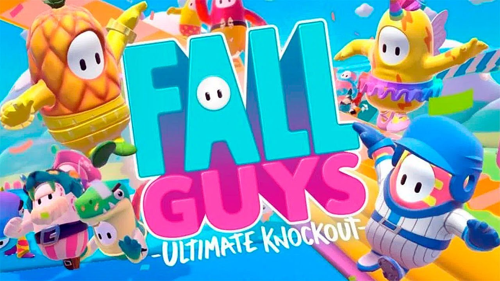

териал из Википедии — свободной энциклопедии Перейти к навигацииПерейти к поиску Fall Guys: Ultimate Knockout Обложка игры Обложка игры Разработчик Флаг Великобритании Mediatonic Издатели Весь мир Devolver Digital (2020 – 2021) Весь мир Epic Games (2021 – н.?в.) Дата анонса 9 июня 2019 года Даты выпуска Windows, PlayStation 4 Весь мир 4 августа 2020 года PlayStation 5, Xbox One, Xbox Series X/S, Nintendo Switch Весь мир 21 июня 2022 года Жанр платформер Технические данные Платформы Windows, PlayStation 4, PlayStation 5, Xbox One, Xbox Series X/S, Nintendo Switch Движок Unity Режим игры многопользовательский Языки интерфейса русский язык присутствует полный список[показать] Носитель цифровая дистрибуция Системные требования минимальные[показать] Управление клавиатура и мышь или геймпад Официальный сайт Fall Guys: Ultimate Knockout — компьютерная игра, разработанная британской студией Mediatonic и изданная компанией Devolver Digital. Проект был анонсирован в 2019 году в рамках выставки E3. Выход игры состоялся в 2020 году на платформах Windows и PlayStation 4. Содержание 1 Игровой процесс 2 Разработка и выпуск 3 Восприятие 4 Примечания 5 Ссылки Игровой процесс Заготовка раздела Этот раздел не завершён. Вы поможете проекту, исправив и дополнив его. Fall Guys — игра в жанрах королевской битвы, платформера и аркадной игры. В одном матче может принимать участие до 60 игроков. Каждый матч разбит на несколько раундов. В каждом раунде игроки в ходе участия в мини-играх должны выполнить определённую задачу, при этом часть игроков, которые не выполнили или не успели выполнить условия игры, выбывает. Данные мини-игры могут быть как индивидуальными, так и требующими выполнения задачи в командах из нескольких игроков, которых в зависимости от мини-игры может быть от двух до четырёх. Мини-игры могут иметь разные условия победы и поражения, например: добраться до финиша раньше, чем определённый процент игроков, оставаться на уровне определённый промежуток времени, забить наибольшее количество мячей другой команде и т. д. Игра продолжается до тех пор, пока в финальном раунде не останется один участник. Разработка и выпуск Игра была анонсирована 9 июня 2019 года в рамках E3 2019, где в качестве платформ были названы ПК под управлением Windows и приставка PlayStation 4[1]. Изначально выход игры был намечен на начало 2020 года, но впоследствии был отложен до лета[2]. Позже, в рамках трансляции Devolver Direct 2020, было объявлено, что выход игры состоится 4 августа[3]. 2 марта 2021 года студия Mediatonic была куплена компанией Epic Games[4][5]. Вместе с этим Mediatonic заявила, что хочет встроить в игру систему аккаунтов, кроссплей и новые режимы[6]. 16 мая 2022 года Mediatonic и Epic Games объявили о том, что Fall Guys переходит на free-to-play модель и будет выпущена 21 июня 2022 года на приставках Xbox One, Xbox Series X/S и Nintendo Switch[7]. Также была анонсирована специальная версия для PlayStation 5 с улучшенной графикой и эффектами для DualSense[8]. Игра будет удалена из Steam, однако те, кто её там приобрёл, по-прежнему смогут играть и получать обновления[9]. Кроме того, игра будет переименована в Fall Guys, лишившись при этом подзаголовка Ultimate Knockout[7]. Восприятие [скрыть]Рецензии Сводный рейтинг Агрегатор Оценка Metacritic (PC) 79/100[10] (PS4) 80/100[11] Иноязычные издания Издание Оценка Destructoid 8/10[21] Game Informer 8.75/10[19] GameRevolution 3,5/5[17] GamePro 80/100[15] GameSpot 7/10[16] GamesRadar 4,5/5[18] GameStar 78/100[22] IGN 8/10[14] Jeuxvideo.com 15/20[13] PC Gamer (UK) 80/100[23] Polygon Рекомендовано[12] USgamer 4 из 5 звёзд4 из 5 звёзд4 из 5 звёзд4 из 5 звёзд4 из 5 звёзд[24] PC Games 8/10[25] The Guardian 4 из 5 звёзд4 из 5 звёзд4 из 5 звёзд4 из 5 звёзд4 из 5 звёзд[26] Push Square 8 из 10 звёзд8 из 10 звёзд8 из 10 звёзд8 из 10 звёзд8 из 10 звёзд8 из 10 звёзд8 из 10 звёзд8 из 10 звёзд8 из 10 звёзд8 из 10 звёзд[27] Русскоязычные издания Издание Оценка 3DNews 8/10[30] Gameplay 7/10[28] PlayGround.ru 8.5/10[29] StopGame.ru Похвально[31] Fall Guys получила в целом положительные отзывы от критиков. Средний балл ПК-версии на агрегаторе оценок Metacritic составил 79 баллов из 100, версии для PlayStation 4 — 80 баллов[10][11]. На момент выпуска игра пользовалась популярностью как у игроков, так и у зрителей стриминговых сервисов. Так, на следующий день после запуска пиковое количество одновременно играющих пользователей в сервисе Steam превысило 80 000 человек, а общее количество игроков на обеих платформах составило более 1,5 миллиона[32]. В день релиза стримы по игре в сервисе Twitch одновременно смотрели более 500 000 человек, что позволило игре стать самой просматриваемой в этот день[33]. Менее чем через одну неделю в Steam было продано более 2 миллионов копий[34]. Fall Guys часто сравнивают с Among Us, поскольку они обе являются онлайновыми играми, которые приобрели большую популярность во время пандемии COVID-19[35][36][3
Read more

FALL Guys
.webp)